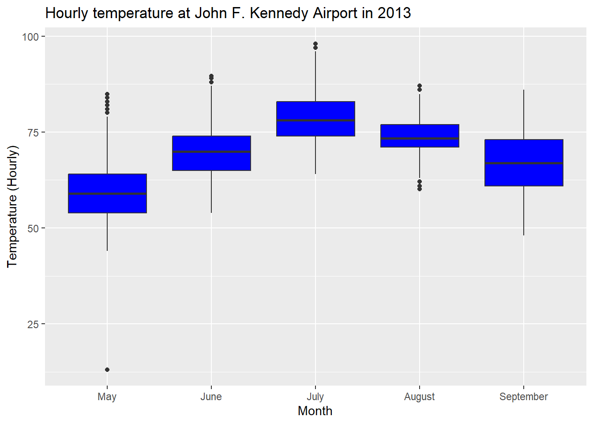
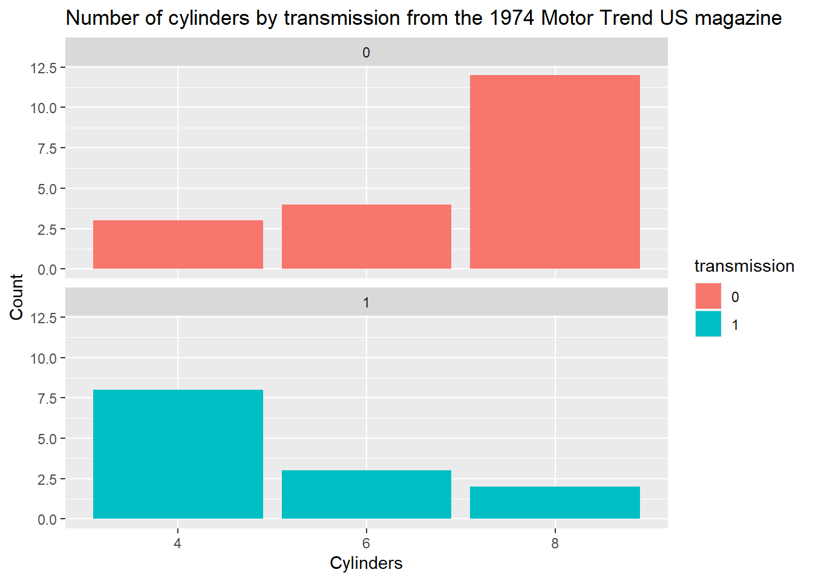
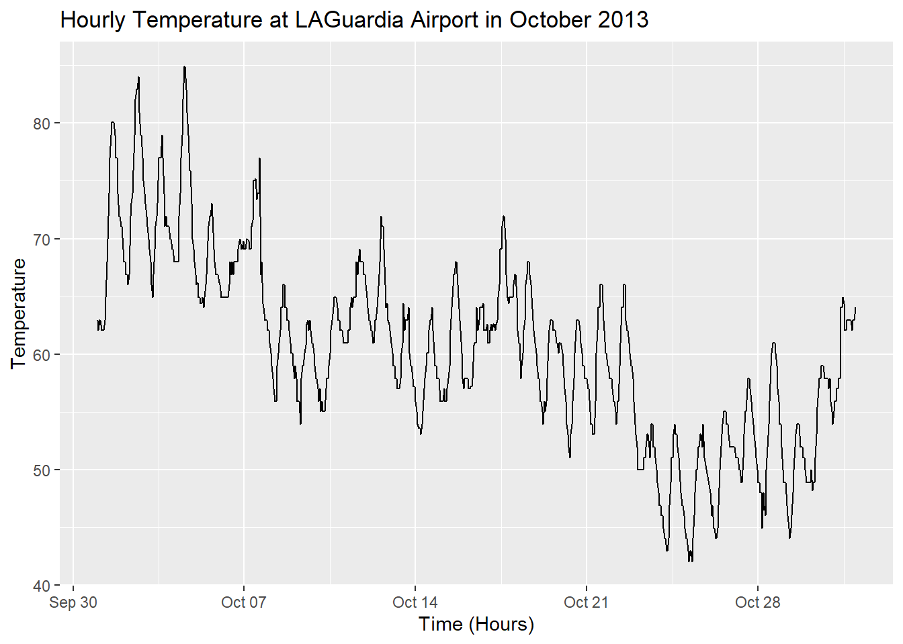

library(ggplot2)
library(nycflights13)
library(datasets)Week 1 Task Solutions
Tasks
- From the
flightsdata set, subset the data for the airline carrierJetBlue Airwaysand produce a scatterplot of their departure delays against arrival delays usingggplot. Interpret the scatterplot.
JetBlue <- flights[flights$carrier == "B6", ]
ggplot(data = JetBlue, mapping = aes(x = dep_delay, y = arr_delay)) +
geom_point() +
labs(x = "Departure delay (minutes)", y = "Arrival delay (minutes)",
title = "JetBlue Airways flights leaving NYC in 2013")Warning: Removed 586 rows containing missing values (`geom_point()`).
- Produce a histogram of the hourly temperature from Newark Liberty International (EWR) Airport in 2013 using
ggplot. How does the temperature distribution compare with that from all airports in New York City in 2013?
EWR.temps <- weather[weather$origin == "EWR", ]
ggplot(data = EWR.temps, mapping = aes(x = temp)) +
geom_histogram(bins = 60, color = "white") +
labs(x = "Temperature", y = "Frequency",
title = "Hourly temperature at Newark Liberty International Airport in 2013")Warning: Removed 1 rows containing non-finite values (`stat_bin()`).
- For John F. Kennedy Airport, produce boxplots (using a single
ggplotcommand) of the hourly temperature for the months May, June, July, August and September. How does the hourly temperature change during this period?
JFK.temps <- weather[weather$origin == "JFK" & weather$month %in% 5:9, ]
ggplot(data = JFK.temps, mapping = aes(x = factor(month), y = temp)) +
geom_boxplot(fill = "blue") +
labs(x = "Month", y = "Temperature (Hourly)",
title = "Hourly temperature at John F. Kennedy Airport in 2013") +
scale_x_discrete(labels = c("May", "June", "July", "August", "September"))
- Take a look at the
mtcarsdata set within thedatasetslibrary relating to data extracted from the 1974 Motor Trend US magazine. Usingggplot, produce a faceted barplot of the categorical variables relating to the number of cylinders (cyl) and the automobiles transmission (am). Interpret the barplot.
mt.cyls <- as.data.frame(table(mtcars$cyl, mtcars$am))
colnames(mt.cyls) <- c("cylinders", "transmission", "number")
ggplot(data = mt.cyls, mapping = aes(x = cylinders, y = number, fill = transmission)) +
geom_col() +
facet_wrap(~ transmission, ncol = 1) +
labs(x = "Cylinders", y = "Count",
title = "Number of cylinders by transmission from the 1974 Motor Trend US magazine")
- Produce a linegraph of the hourly temperature at LAGuardia (LGA) Airport for the month of October 2013. Interpret the linegraph.
LGA.Oct <- weather[weather$origin == "LGA" & weather$month == 10, ]
ggplot(data = LGA.Oct, mapping = aes(x = time_hour, y = temp)) +
geom_line() +
labs(x = "Time (Hours)", y = "Temperature",
title = "Hourly Temperature at LAGuardia Airport in October 2013")